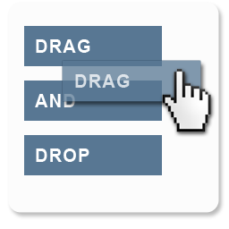

SwiftUI
SwiftUI is Apple's declaritive UI framework and its used all throughout Food Bot. Food Bot is built on SwiftUI and requires much less code than its UI counterpart, UIKit. SwiftUI aslo made it much easier to target multiple apps in the same project.
UIKit
UIKit is Apple's imperative UI framework that offers much greater support for legacy features due to its longer life compared to the newer SwiftUI. UIKit was used many times throughout Food Bot to enable features such as WKWebView and PDFKit.
Cloudkit
Cloudkit is Apple's BAS (backend as a service) framework that manages all of Food Bot's backend. Food Bot uses Cloudkit for managing restaurants and notifications. Each restaurant is set up in an SDUI fashion. This allows for dynamic changes in Food Bot restaurants without an app update. Through modifying cloudkit restaurant records: the layout, number of text fields, regex for camera scanning text, or the javascript logic for filling the survey can all be changed on the fly.
Core Data
CoreData is Apple's device storage framework that is used as the backbone of Food Bot when it comes to managing data. Food Bot saves all surveys completed and the entire persistant store is backed up in a private cloudkit container where it can be synced across devices.
Notifications
Food Bot subscribes to changes in a certain database in CloudKit and handles those notifications with the use of an extension, UNNotificationServiceExtension. The service extension acts first when a notification is recieved, it parses the data sent (data is sent with a mutable flag) and finds the correct ids it needs to fetch more data such as images or text and when it's ready, notifies the user.
PDFKit
PDFKit is Apple's API for integrating pdf's into your app. This is important in Food Bot to display survey confirmation pages to the user. PDF's were a much better decision for Food Bot as oppose to images due to their smaller size and ability to select text or links.
WebKit
WebKit is Apple's API for integrating websites into your app. This is integral for Food Bot's purpose of completing online surveys. This is all done through a WKWebView by injecting javascript into each webpage that fills each survey. The javascript can then communicate back to the WKWebView to relay information such as the progress of the survey, if the survey failed or if it succeeds.
Core Transferable
Core Transferable is Apple's api for drap and drop related functions. Food Bot uses Core Transferable in devices running IOS 16 or above. Press and hold on any survey in History tab and it will become draggable to any location outside the app. When they are dropped the PDF is transferred to the new location.